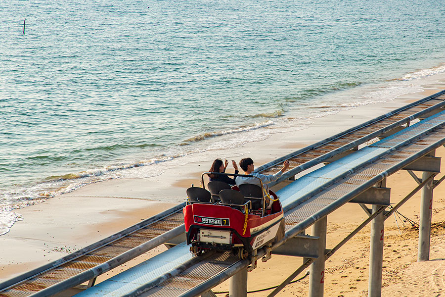
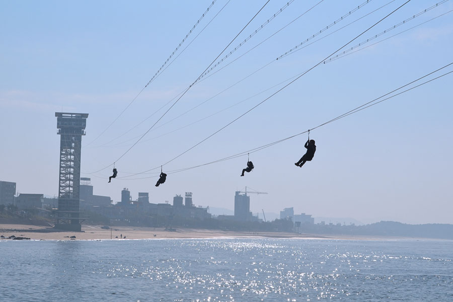
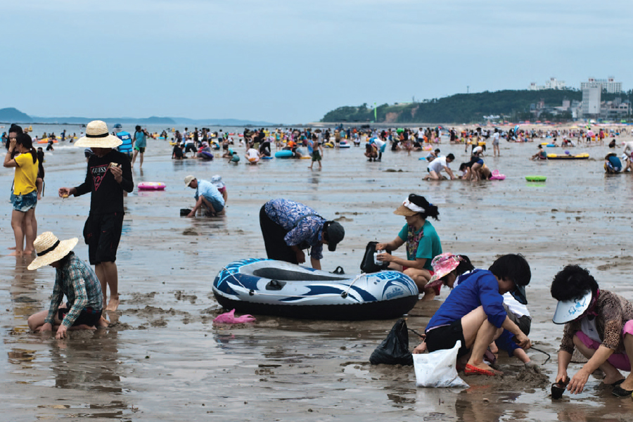
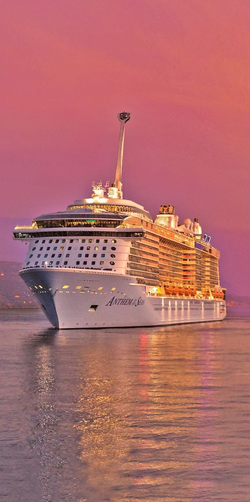

체험활동안내&예약
다양한 체험활동과 함께 대천을 즐겨보세요!
스카이바이크
국내 최초인 스카이바이크는 대천해수욕장의 관광포인트인 해수욕장과 절경을 바다 위에서 한껏 감상하실 수 있습니다.
운영시간
6~8월(성수기) 10시~18시
비수기 10시~17시
*월요일,설/추석 당일 휴무 (성수기 제외)
예약하기

짚트랙
바다 위를 비행하는 듯한 신종 레저 스포츠인 짚트랙은 아래로는 아름다운 대천해수욕장을, 정면으로는 확 트인 하늘을 볼 수 있어 다른 곳의 짚트랙과는 비교가 안될 만큼 아름다운 풍광과 함께 짜릿한 스릴을 느낄 수 있습니다.
운영시간
6~8월(성수기) 10시~18시
비수기 10시~17시
*월요일,설/추석 당일 휴무 (성수기 제외)
예약하기

조개잡이체험
갈수록 많은 관광객이 찾고 있는 곳으로 물이 빠져 갯벌의 바닥이 드러날때 쯤이면 바지락, 낙지, 작은게 등의 해산물을 잡기 위한 사람들로 갯벌이 온통 울긋불긋 해집니다.
육지에선 전혀 느낄 수 없는 색다른 체험을 할 수 있습니다.
운영시간
*조석표(물때) 참조
예약하기

유람선
선상위에서 대천바다의 참모습을 즐길 수 있습니다.
운영시간
매일 11시
예약하기
